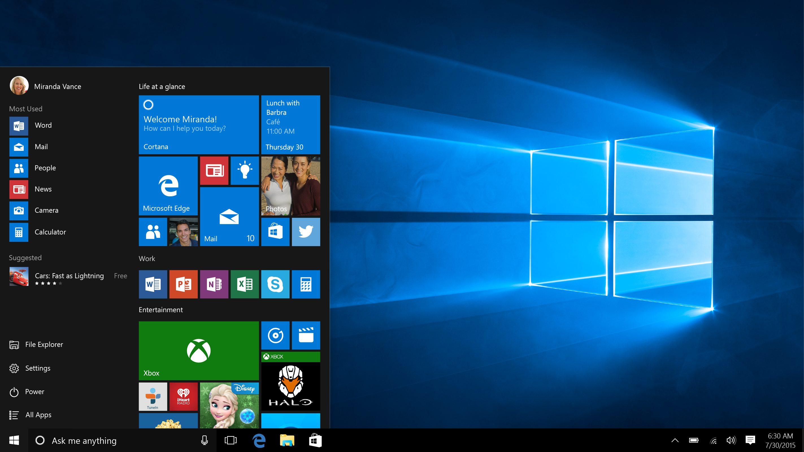

Atualmente, com o Windows 10 e 11, vivemos o refinamento total através do Fluent Design. O Windows 10 começou a suavizar o minimalismo do seu antecessor, mas foi o Windows 11 que trouxe uma sensação de elegância e calma. A interface moderna utiliza o efeito Mica para criar camadas de transparência opaca que economizam bateria, enquanto os cantos arredondados e a barra de tarefas centralizada trazem um aspecto mais orgânico e menos rígido. É um visual que equilibra a limpeza do plano com a profundidade sutil, focado em telas de alta definição e no conforto visual do usuário contemporâneo.

Fonte: telesintese